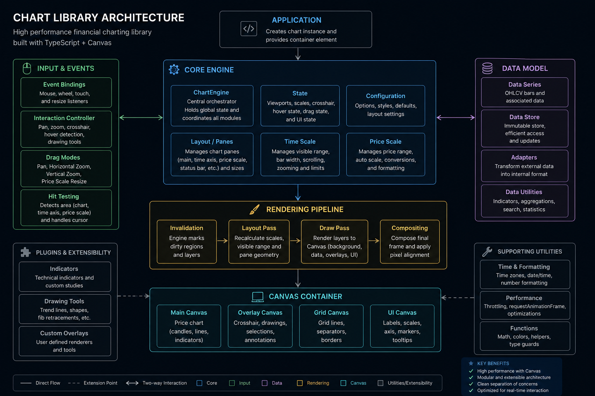

A high-performance financial charting engine built with TypeScript and the HTML5 Canvas API.
Designed from the ground up for professional trading applications, the engine focuses on performance, modularity, and extensibility while remaining framework-agnostic.

The engine is organized into independent modules that communicate through the central ChartEngine instance.
ChartEngine
│
├── Core
│ ├── Rendering
│ ├── Layout
│ ├── Events
│ ├── Time Scale
│ ├── Price Scale
│ └── Utilities
│
├── Series
│ ├── Candles
│ ├── Line
│ ├── Area
│ └── Custom Series
│
├── Indicators
│
├── Drawings
│
├── Overlay
│
└── UI
Every subsystem is isolated, making it easy to extend without modifying the rendering pipeline.
The renderer is split into multiple canvas layers.
Main Layer
Overlay Layer
Price Scale
Time Scale
Drawing Layer
Interaction Layer
Only the layers that become dirty are redrawn, minimizing rendering cost.
The engine supports desktop and touch interactions.
The price viewport supports:
The time scale supports:
The engine does not redraw the entire chart every frame.
Instead, each subsystem owns a dirty flag.
Main
Overlay
Time Axis
Price Axis
Drawings
Only the modified layers are rendered.
This significantly improves performance during interaction.
src/
│
├── chart/
├── renderer/
├── series/
├── indicators/
├── drawings/
├── overlay/
├── timeScale/
├── priceScale/
├── layout/
├── interaction/
├── utils/
└── ui/
Each directory contains a self-contained subsystem.
The engine is designed to render thousands of candles while maintaining smooth interaction.
Optimizations include:
This project aims to provide a lightweight yet professional financial charting engine that is:
GPL-3.0-only